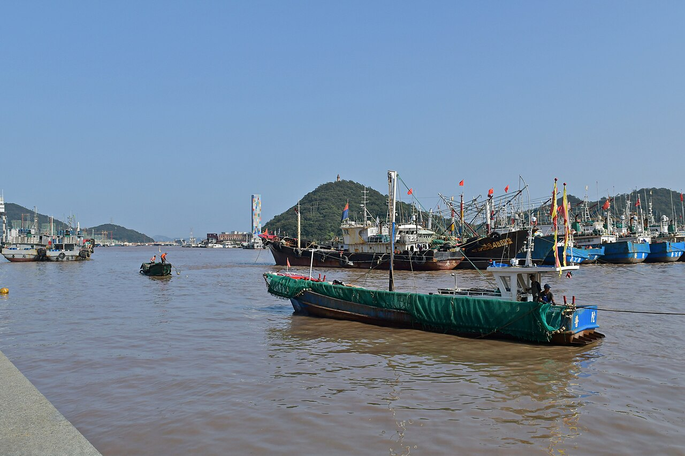
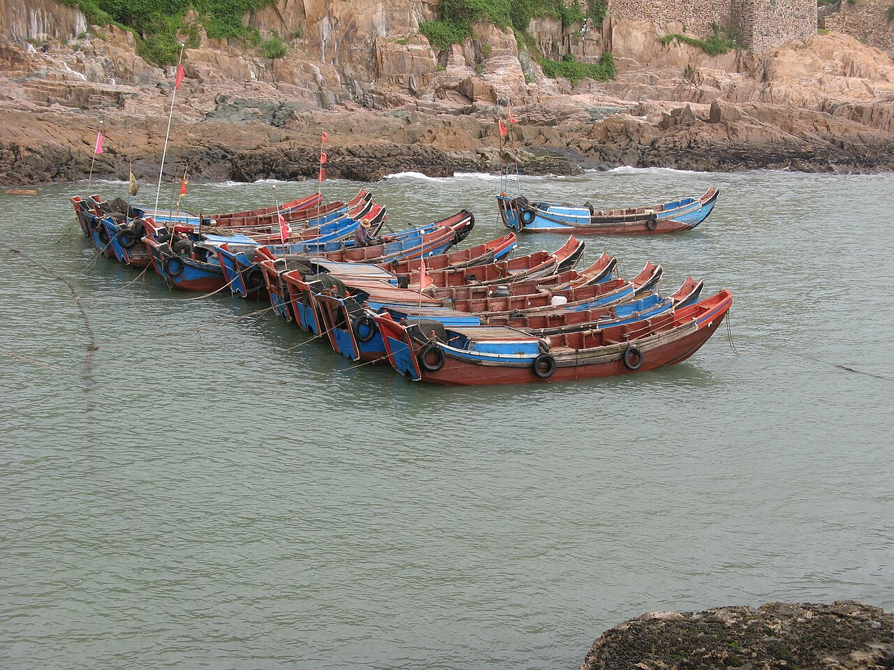
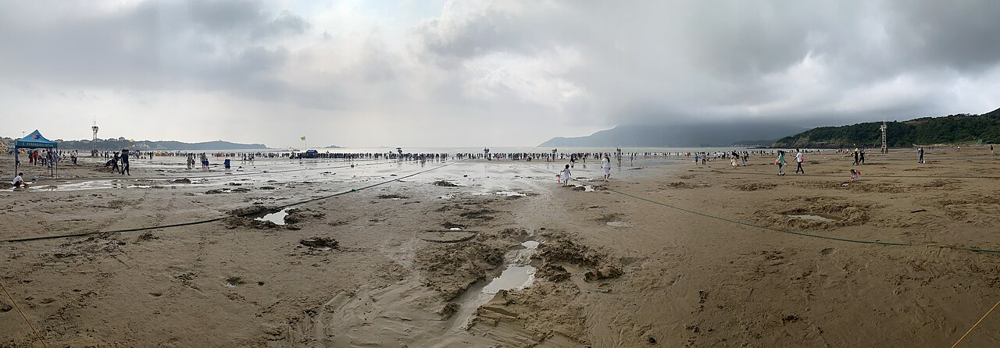

🐾
小狗登船
13.7 kg 低于运营方公布的 30 kg 体重上限；肩高仍须不超过 60 cm。还需按船方要求使用宠物包/笼，在指定区域安置；班次可限制宠物数量。
肩高、笼包、携宠名额待核杭州取还车 · 沈家门登船 · 东极岛庙子湖住一晚 · 朱家尖看海收尾。SU7 只开到沈家门，停在码头附近；人和小狗乘客船上岛，车不能随船上岛。
下图为地点实拍旧照，用于认景；天气和现场景色以出发当天为准。



往返船票与三晚住宿已确认；小狗体重 13.7 kg，仍需实测肩高、备妥宠物笼包并确认当班携宠名额。
租车停在沈家门，不能随客船上岛。量小狗肩高并备好能全程容纳它的宠物笼包；船方每班可限制携宠数量，出发前向运营方核对当班规则与海况。
13.7 kg 低于运营方公布的 30 kg 体重上限；肩高仍须不超过 60 cm。还需按船方要求使用宠物包/笼，在指定区域安置；班次可限制宠物数量。
肩高、笼包、携宠名额待核已购两人往返票：10 月 4 日 11:50 半升洞→庙子湖，10 月 5 日 15:30 庙子湖→半升洞。携程两笔订单均显示“已完成”；开航前仍需核对船班与海况。
往返订单已完成普陀区气象部门 9 月 30 日预计 4—5 日沿海有 8—9 级大风，5 日阵雨转多云；这两天的船班有变动风险。3 日睡前、4—5 日出门前查运营方公告。
海况优先于日程来自手机端逐篇核对的小红书记录。照片点开原作者笔记查看；没有转载许可，本页不复制笔记图片。笔记为作者当时经历，不保证国庆同样海色、价格或等位。
| 景点与决定 | 何时去、看什么 | 带狗与代价 | 实拍 |
|---|---|---|---|
| 必去 · 半升洞城市阳台 | 3 日到得早且雨小，约 16:50–17:45 看渔港日落及蓝调。 | 开放步道牵引；雨天避湿台阶，晚到就跳过。 | 是你马哥 · 半升洞渔港 ↗ |
| 必去 · 庙子湖港边海岸 | 4 日 16:00 起留给渔船与西向海面；不赶完整环岛。 | 主路牵狗，风雨大退回民宿；全环岛实走约 4.5 小时。 | 大卫想知道 · 庙子湖海岸 ↗ |
| 顺路 · 倒陡街／小乌石塘 | 5 日上午街巷；6 日返杭前看黑色鹅卵石。 | 小乌石塘走开放空间；不进收费乌石塘景区，不踩湿礁石。 | 飞天大蓝莓 · 倒陡街 ↗ · 好大一只圈 · 小乌石塘 ↗ |
| 不专程 · 南沙／东沙收费沙滩 | 南沙国庆拥挤反馈多；东沙日出要摸黑早起，且 10 月开放时间待核。 | 收费区携犬说法冲突；带 13.7 kg 狗不以入园为前提。 | 落梦 · 南沙人流 ↗ · Red红红 · 东沙日出 ↗ |
| 吃饭决定 | 口味与费用参考 | 排队、营业、带狗 | 依据 |
|---|---|---|---|
| 3 日 · 高佳庄／笑嘻嘻 | 早到比高佳庄活鲜；晚到看笑嘻嘻固定价套餐。高佳庄一篇 4 人 ¥700 多。 | 笑嘻嘻好评、差评并存；两店国庆营业、等位与携犬待问。 | Betty · 高佳庄 ↗ · 笑嘻嘻好评 ↗ · 差评 ↗ |
| 4 日 · Hola Hola | 烤鱼、避风塘虾；点评 10/1 约 ¥110/人。 | 页面晚餐 17:00–20:30；等位和携犬待问，备选海享莱供餐。 | She's · 菜单 ↗ · 欧欧Barbie · 用餐 ↗ |
| 5 日中午 · 石码头／民宿 | 甜口梭子蟹；一篇笔记约 ¥100/人。 | 节日营业、排队与携犬待问；12:30 前吃完。 | 我早上七点半上班 · 实吃 ↗ |
| 5 日晚 · 川海人家 | 酒店附近海鲜；点评 10/1 约 ¥109/人。 | 页面至 24:00，节日营业和携犬待问；外带为备选。 | 大众点评 App 10/1 页面；到店核营业和菜单。 |
详细景色、时段、人流、价格、负面反馈及来源见本地研究文件。用餐先问是否接待 13.7 kg 小狗，再看活鲜重量、每斤单价、加工费和总价。
时间是可执行的建议窗口；船班、道路拥堵与酒店入住时间需以实际订单调整。
拍车况和仪表电量，核对充电接口与还车电量；让店员确认实际辅助驾驶功能和 13.7 kg 小狗乘车规则。后排固定宠物包或安全带。
国庆按 5–7 小时留弹性；交管部门预计 3 日跨海桥车流可能最大。中午在沿途服务区吃简餐、补水。车机预计到舟山剩余电量低于 20% 时，在上跨海桥前先选空闲快充；充电时带小狗离车休息。
若 16:45 前抵达且雨小，放好行李，牵狗沿开放步道走到半升洞城市阳台；约 17:33 日落，留到蓝调约 17:45。实走机位；下雨、堵车或电量低就缩短散步并先补电。湿台阶不要走。
选粥、包子或便利店简餐；给小狗喂食和上厕所。再次看船班、海况、肩高、笼包及疫苗本。
优先按国庆现场指引停石油公司停车场，乘免费接驳到半升洞客运中心；接驳 07:30–18:30、约 20 分钟一班。停车场饱和时按现场指引改鲁家峙临时停车场。务必确认可过夜停放及收费。
提前检票并向船员确认小狗安置区域；准备吸水垫、饮水和清洁袋。人狗全程按船方当班要求行动。
按民宿入住与接送安排落脚；岛上午餐不宜再赶远点。吃热面或让民宿供餐，问能否带狗和外带。
先看当日风雨。安全时从倒陡街往返，拍街巷与海景；实走路线适合返航前几小时。若沿海 8—9 级大风或小狗疲惫，就只逛港边、留夏外带和民宿阳台；不摸黑追日出或走福山庙野径。
给行李、宠物安检和临时天气调整留余量；不要把海边拍照排到登船前一刻。
17:30 预计回半升洞；按接驳和车流实际情况取车，再去南沙附近酒店。检查 SU7 电量和次日回杭州车机预计到达电量。
川海人家南沙总店在酒店附近，是晚到的候选；金海湾或酒店周边简餐备选。先看实际营业、等位与携犬室外座，不接犬就外带。车机若预测次日到杭州低于 15%，先在高德/车机查实际开放且空闲的快充，南沙规划站不保证已投运。
车机设一嗨未来科技城店，看预计到达时间、电量和空闲快充；电量不足或堵车就取消小乌石塘，并在出岛前或沿途安排一站充电。
最迟约 10:15 离开朱家尖；在服务区合并午餐、遛狗和按车机建议补电。交管预计朱家尖大桥出岛高峰 13:00 起；若导航显示返程拥堵明显，就更早出发，保证 18:30 还车。
到门店前核对还车电量、拍照记录车况，清理宠物毛发，取全行李；按订单在 18:30 前归还。
宠物包无法准备、当班宠物名额满、狗的体型不符合规则，或海况停航，就使用这条陆上路线。已购船票若遇停航，及时按平台规则申请退票，并联系岛上酒店调整或取消订单。
选可以带狗的室外座位或外带；雨大则减少户外停留。
适合轻松走走拍照；具体商户、室内场所的宠物规则逐家确认。
省去跨城换房，第二天再向朱家尖移动。
不赶收费景点，沿途看海景、找允许携犬的开放空间。
把好天气留给海边摄影。乌石塘收费入口及南沙不能默认带狗进入。
宠物友好座位需提前和店家确认。
一嗨订单显示：10 月 3 日 08:30 杭州未来科技城店取车，10 月 6 日 18:30 同店还车，租期 3 天 10 小时，已支付 ¥2,849。车辆只用于杭州—舟山及舟山陆上路段；10 月 4—5 日上岛期间停在沈家门。
一嗨订单已显示 SU7 预约成功、在线支付 ¥2,849。交付年款、辅助驾驶权限与携宠许可仍要在提车前向门店核实，交车时现场检查。
订单金额与时间已核实；交付版本、功能及携宠规则尚未从门店得到明确答复。上岛期间车辆需在沈家门停放过夜，停车费计入预算。
交付年款、电池容量和出发电量尚未确定，车机预测与现场空闲桩优先于固定里程。以下是时间窗口和判断条件。
记录电量、充电口、还车电量规则。出发后导航沈家门；预计到达低于 20% 时，在进舟山跨海桥前选沿途空闲快充，顺便午餐、遛狗。
抵达后先查中国石化沈家门老车站充电站；若排队，查杉杉·普陀天地地下站。若到站电量偏低，建议当晚补到约 75%–85%，给 4–5 日停放和后续行驶留余量；若电量充足，可把渔港落日前时段留给散步，再在晚饭后补电。
取车后看次日回杭州的预计到达电量。若低于 15% 或车机建议充电，先在车机/高德查朱家尖或普陀区实际开放的空闲快充；南沙公共站仅见规划，不能当作已投运站。
按实时路况规划。午餐、小狗休息可与沿途补电合并；为 18:30 还车留约 1 小时机动。充电时带小狗离车，不把宠物单独留在车内。
老车站站地址已在高德地图核对；杉杉·普陀天地地下站见普陀当地报道；朱家尖南沙公共站仅见普陀区充电站规划，尚不能证实已投运。实时空闲、功率、费用及对 SU7 的开放情况须在当天充电 App 或车机复核。
大众点评 App 10 月 1 日所见评分、人均、营业时间是选店参考，国庆可能调整；带狗入座请逐店问，不能默认允许。
早到比高佳庄海景旗舰店活鲜与标价（点评 10/1 约 ¥172/人、页面 20:30 收店）；晚到可看笑嘻嘻（滨港路 208–211 号，约 ¥134/人、页面至次日 02:00）的固定价套餐。好评与差评并存；国庆时间、现场价格另核。
先问室外座与携犬Hola Hola 在阜头 1 弄 39 号；点评 10/1 页面 4.8 分、约 ¥110/人，晚餐 17:00–20:30。菜单实拍和另一篇用餐体验提到烤鱼、避风塘虾；另有顾客因排队错过原船班，因此安排 4 日晚餐，不把它放到 5 日返航前；出门前核营业。雨大或小狗疲劳时，先问已订海享莱民宿的海景餐厅，携程参考约 ¥92/人。
海鲜先确认时价、份量与做法一篇实吃笔记称石码头甜口梭子蟹、约 ¥100/人；国庆营业和等位待确认。人多或小狗不便入店时改海享莱供餐/外带，12:30 前吃完。如意面馆近期差评后不作为默认备选。
先查当日营业与携犬度假村路 609 号璞缇海景公寓 1 栋；点评 10/1 页面 4.8 分、约 ¥109/人、至 24:00，适合返港后晚到，节日营业待确认。备选金海湾海鲜排档或酒店附近简餐；不为雷同的“排队王”推广笔记跨岛等位。
可打包到酒店，避免狗入店限制把午餐、给狗补水和一站充电合并，减少单独绕路。若服务区拥堵，带常温零食和水，在车机确认下一站再决定。
避免压缩 18:30 还车缓冲优先露天座；不接待就外带。选海鲜时先看清单价与重量，按两人份点单，问加工费与餐位费。雨天带狗进餐厅困难时，让一人取餐，另一人照看小狗。
价格与宠物政策随店变化点击后打开高德地图搜索；导航前核对同名地点与码头入口，充电站先看实时空闲。
一篇小红书自驾笔记提示“半升洞客运中心停车场”和真正登船口可能不是同一导航终点；2026 国庆交通提示要求按石油公司停车场及接驳现场指引行动。
下列房型、入住日期和金额已按 10 月 1 日携程订单核对；退订政策与携宠要求以各订单和酒店最新答复为准。
10 月 5 日原朵丽思订单已取消并显示退款 ¥563。息耒金沙酒店人工确认宠物友好、免费；旅客告知目前只有疫苗本后，店家回复“带了就提供一下”。小狗登船仍需实测肩高、备笼包并核对当班携宠名额。
已订「海景大床房」，10 月 3–4 日 1 晚，携程订单显示预订成功，在线付 ¥617。平台曾标注可带狗、宠物费 ¥30 / 只 / 天；请向酒店确认 13.7 kg 小狗入住与实际收费。酒店电话：0580-3080888。
查看 10.03 房型 ↗已订「雨露·阳台一线海景大床房」，10 月 4–5 日 1 晚，携程订单显示预订成功，在线付 ¥1,254。平台曾标注携宠免费，但仍应向酒店确认 13.7 kg 小狗可入住。电话：15168058588 / 13675808615。
查看 10.04 房型 ↗已订「180°海景阳台大床房」，10 月 5–6 日 1 晚，携程订单显示预订成功，实付 ¥982。酒店人工回复宠物友好、不收额外费用，疫苗本带上可提供；体型限制仍建议入住前再核对。电话：0580-6631118 / 0580-6631666。
查看 10.05 房型 ↗以上价格为携程订单显示金额；若出行前调整房型或行程，以最新订单为准。三家酒店对 13.7 kg 小狗的接待条件仍需逐一核对。
SU7 租车、住宿与船票填写已确认金额；充电、停车、吃饭等仍为估算。可直接改金额，页面会自动合计。
约 ¥4,866 / 人；租车、住宿与船票已付，其余仍按估算。
勾选状态只保存在当前浏览器；换设备不会同步。
动态信息可能随风浪、客流和平台库存变动；出发前以运营方当日页面及客服答复为准。